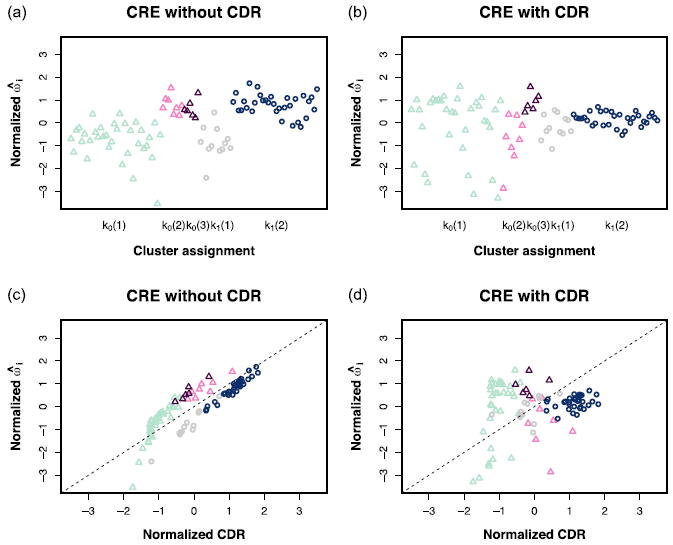
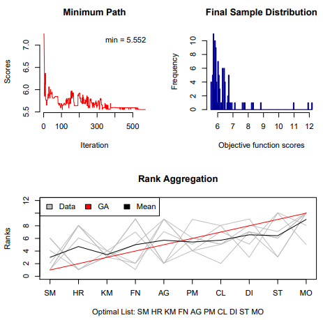
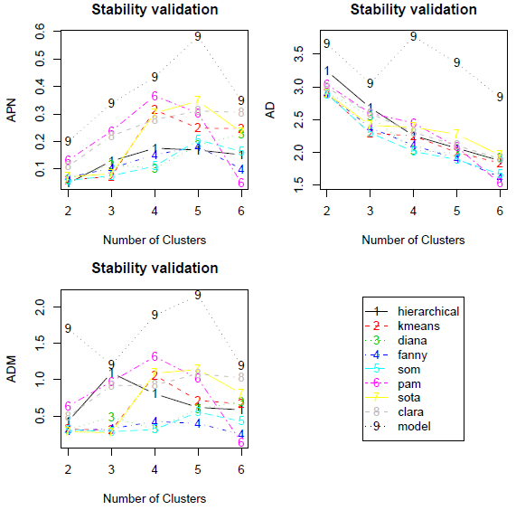

Softwares
Some R Packages or R Codes Generated Through Our Research Team
R code for CAMDA 2020 Metagenomic Geolocation Challenge
The composition of microbial communities has been known to be location-specific. Investigating the microbial composition across different cities enables us to unravel city-specific microbial signatures and further predict the origin of unknown samples. As part of the CAMDA 2020 Metagenomic Geolocation Challenge, MetaSUB provided the whole genome shotgun (WGS) metagenomics data from samples across 28 cities along with non-microbial city data for 23 of these cities. We here implement feature selection, normalization, clustering and three methods of machine learning to classify cities based on their microbial compositions. Multilayer Perceptron obtained the best performance with an error rate of 19.60% based on the highest and the second-highest votes for the main dataset. Using the main dataset to predict the origins of samples from the mystery dataset, for the mystery samples from cities that belonged to the main dataset, error rates ranged from 18.18% to 72.7%; for the cities that did not belong to the main dataset, 57.7% of the test samples could be correctly labeled as “mystery” samples. Furthermore, we also predicted some of the non-microbial features for mystery samples from the cities that did not belong to main dataset to draw inferences and narrow the range of the possible sample origins using a multi-output multilayer perceptron.
R code for CAMDA 2019 Metagenomic Forensic Challenge
Composition of microbial communities can be location-specific, and the different abundance of taxon within location could help us to unravel city-specific signature and predict the sample origin locations accurately. In this study, the whole genome shotgun (WGS) metagenomics data from samples across 16 cities around the world and samples from another 8 cities were provided as the main and mystery datasets respectively as the part of the CAMDA 2019 MetaSUB “Forensic Challenge”. The feature selection, normalization, three methods of machine learning, PCoA (Principal Coordinates Analysis) and ANCOM (Analysis of composition of microbiomes) were conducted for both the main and mystery datasets.

scREhurdle: Identifying Differentially Expressed Genes with Single Cell RNA-Seq Data
scREhurdle is an R package for detecting differentially expressed genes in discrete single-cell RNA sequencing data. This package interfaces with rstan and fits a mixed effect hurdle model on zero-inflated count data.

RankAggreg: Weighted Rank Aggregation of Cluster Validation Measures
RankAggreg performs aggregation of ordered lists based on the ranks using several different algorithms: Cross-Entropy Monte Carlo algorithm, Genetic algorithm, and a brute force algorithm (for small problems).

clValid: Validation of Clustering Results
clValid contains functions for validating the results of a clustering analysis. There are three main types of cluster validation measures available, “internal”, “stability”, and “biological”. The user can choose from nine clustering algorithms in existing R packages, including hierarchical, K-means, self-organizing maps (SOM), and model based clustering. In addition, we provide a function to perform the self-organizing tree algorithm (SOTA) method of clustering.